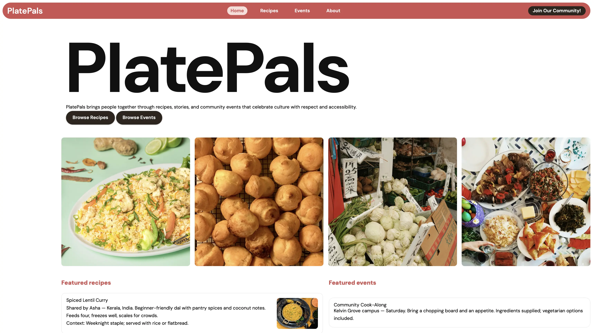
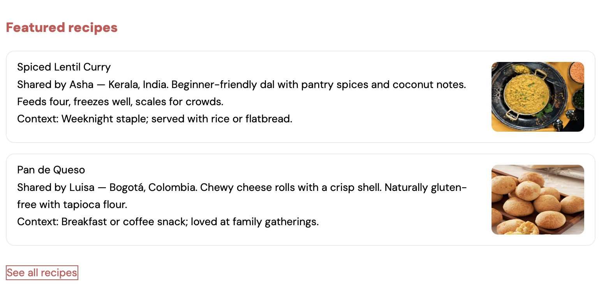

PlatePals
A community recipe platform born from intensive UX research and delivered as a polished, accessible, production-ready front end.
Context, Users & Problem Space
PlatePals began as a response to a familiar problem: recipe platforms are great at content volume, but weak at community and cultural context. For this project, I focused on everyday home cooks who wanted to share recipes as stories, not just instructions. Through UX research including competitor analysis, user interviews, and a short survey, I found consistent pain points: long, cluttered recipe pages, difficulty filtering for dietary needs and time constraints, and a lack of space to highlight the cultural meaning behind a dish. These insights framed the core design challenge: create a recipe platform that feels lightweight to use, inclusive by default, and structured around people and their stories, not just their ingredients.
Research-Driven System & API Design
Research showed that people didn’t want another generic recipe archive; they wanted to discover culturally meaningful dishes, save favourites, and get ongoing updates. That led to a simple browsing model by type and culture, backed by a structured tagging system, user accounts with favourites, and an email-ready feed for new recipes. I integrated the API to support these behaviours so the front end stays fast and closely aligned with the research.
Featured Spotlight & Visual Outcomes
The visual design centres on a featured “spotlight” section that highlights culturally rich dishes, pairing strong imagery with clear hierarchy, high-contrast typography, and concise storytelling. The layout makes the origin, tags, and key details immediately scannable, while the rest of the page stays quieter to keep attention on the featured recipe. Testers reported that the spotlight made the platform feel more “curated” and “personal” than a standard recipe grid, and it became a natural entry point into exploring more dishes. In future iterations, I’d extend this pattern into rotating themed spotlights (e.g. region, occasion, or dietary focus) powered by the same tagging and API structure.